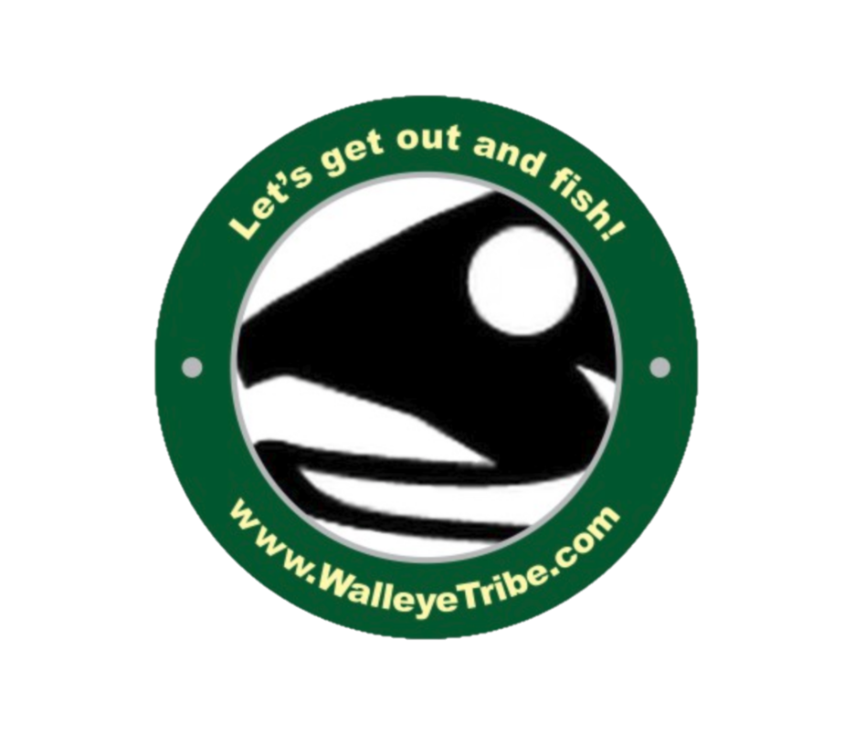

<mat-toolbar color="primary">
  <div>
    <span class="header-text"> Winnebago Walleye Movement Study</span>
  </div>
  
</mat-toolbar>
<div>
  <div class="menu-button-row">
    <a mat-stroked-button href="/">Home</a>
    <a mat-stroked-button href="/movement">Fish Movement</a>
    <a mat-stroked-button href="/fish">Meet the Fish</a>
    <a mat-stroked-button href="/locations">Receiver Locations</a>
  </div>
</div>
